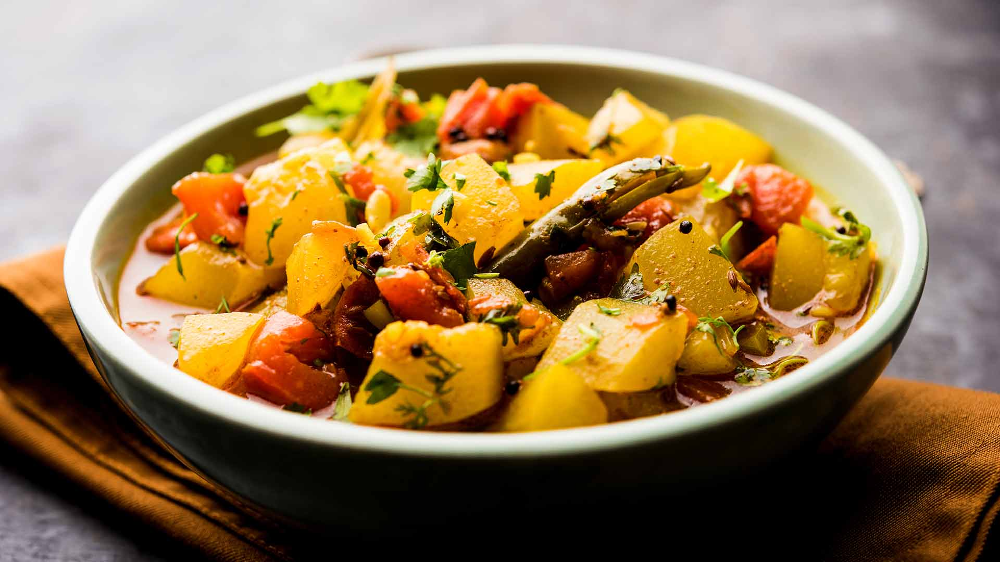

Sabji

Sabji is an indian vegetarian dish made from a mix of vegetables with a variety of spices
- Potatoes - 500 g
- Carrot - 150 g
- Cauliflower - 150 g
- String beans - 100 g
- Olive oil or ghee - 3 tbsp
- Spices: coriander, mustard seeds, cumin, turmeric, red pepper - by taste
- Peel potatoes and carrots, then cut vegetables into cubes.
- Next, use a deep frying pan. Quickly add the spices into the heated oil: cumin, mustard grains and coriander. The mustard will quickly begin to darken and shoot, as soon as this happens, immediately add the pre-cut vegetables.
- Lower the heat and close the pan with a cap. Keep stirring from time to time.
- Add the spices left, stir, and the sabji is ready to serve.